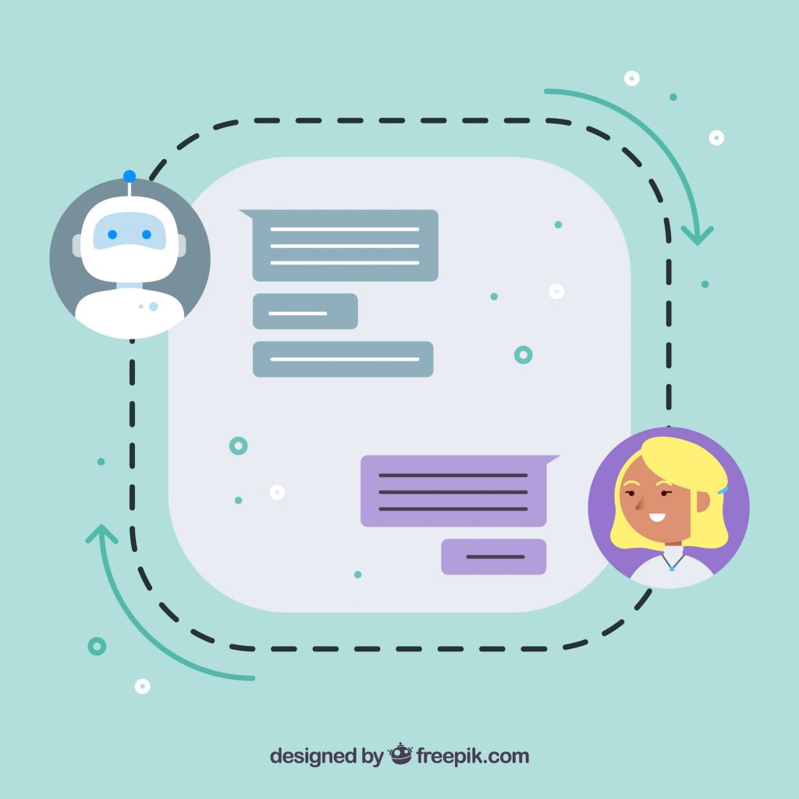
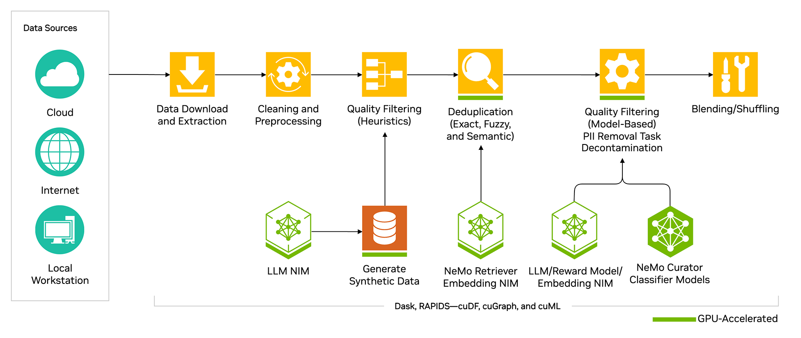
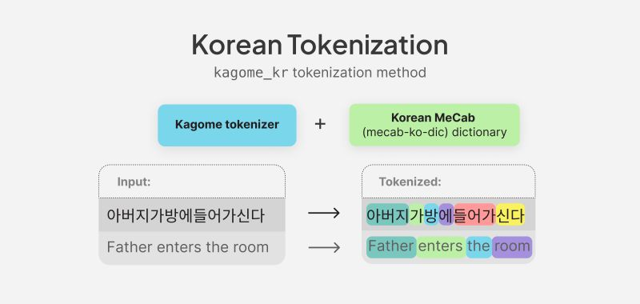
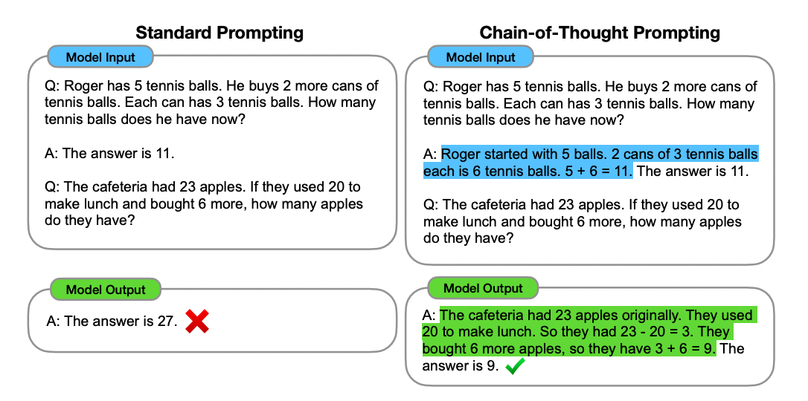
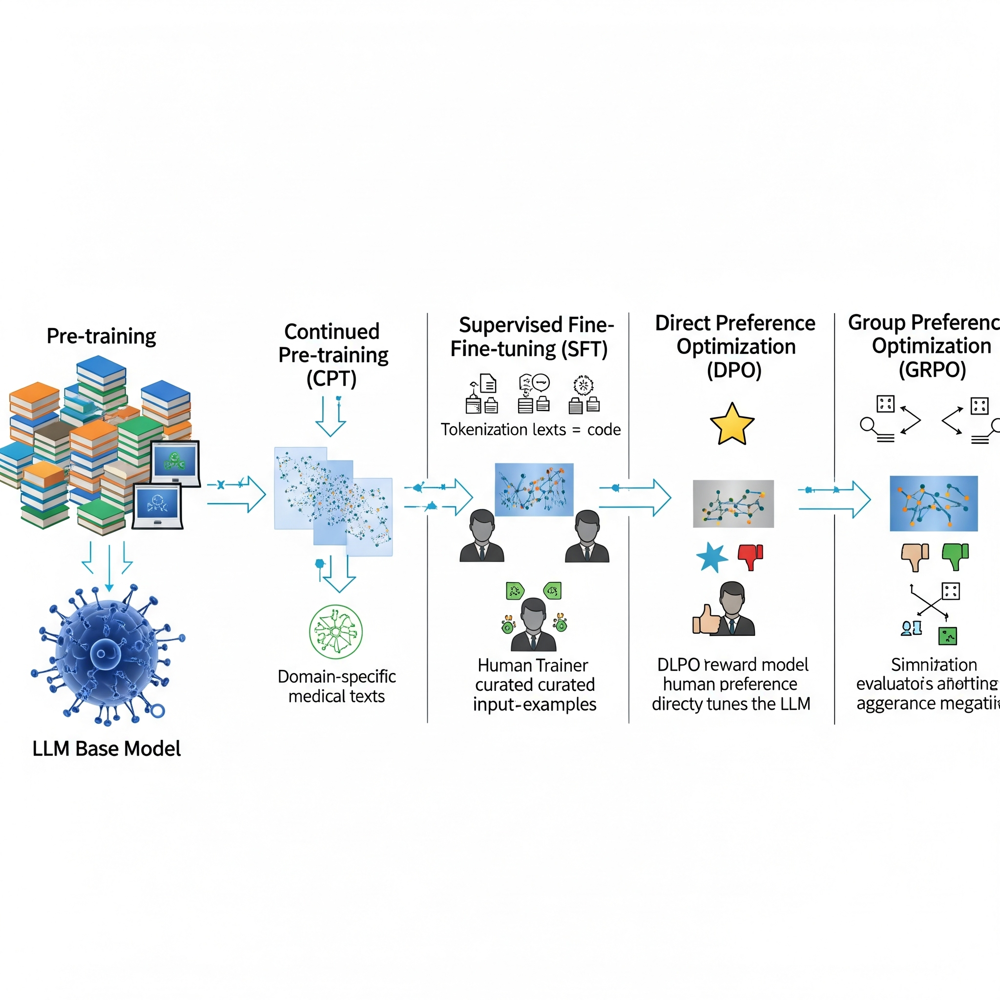

LLM specialized in Korean (June 2025 ~ October 2025)
sponsor: SECERN AI
Consolidated/Affiliated Institution: SECERN AI
In this project, we studied and developed LLM(Large Language Model) specialized in
Korean. Since many prominent LLM are specialized in English, they are likely to
have a lower understanding of context in korean. Therefore, we aim to study and
develop the LLM specialized in Korean.

We exploit Nemo Curator provided by Nvidia to cleanse, deduplication, deduplication of
fuzzy data, and quality filtering for Korean corpus.

2. Tokenization of Korean and Expansion of Tokenizer
With curated Korean corpus, we used tokenizer of pre-trained Large Language Model(LLM)
to get the information of the method that how they tokenize the words in order to
expand the tokenizer without any concerns. In this step, we tokenize the Korean corpus
and expand the tokenizer by adding additional tokens which are not in the original vocabulary.
When expanding tokenizer, we average the weight of embedding if new token is
comprised of tokens in the original vocabulary. Otherwise, we randomly initialized the weights
of embedding.
After expanding the tokenizer, we trained the LLM by freezing transformer layers
to align the text for both new tokenizer and LLM.

3. Generating proper prompt for the conversation corpus
To improve better understanding of question, we generate and select the proper prompt
with LLM (such as GPT-4o, Gemini, etc.). And we impose chain of thought prompting
to make the model answering the question step by step whcih could possibly
make model to answer the question more reasonable.

4. Training model with recipe
With various dataset(corpus), we trained the entire model (tokenizer and LLM)
with CPT(Continued Pre-training), SFT(Supervised Fine-Tuning), Direct Preference
Optimization(DPO), and Group Preference Optimization(GRPO). In this stage,
we tested and explored the best hyper-paramter to train a decent model.
(PS) During the model development, we tested many scheme such as changing the architecutre,
modifing number of layers, activation function, loss function, and etc to
improve the performance.